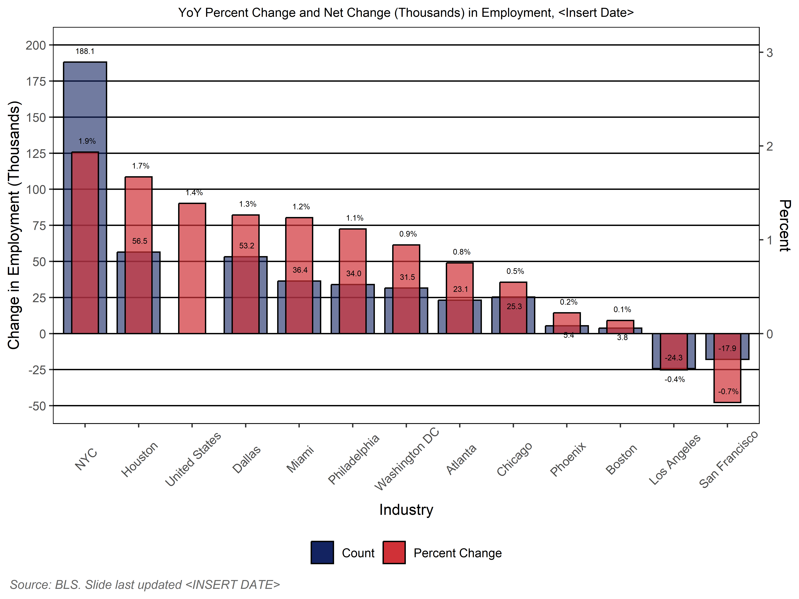
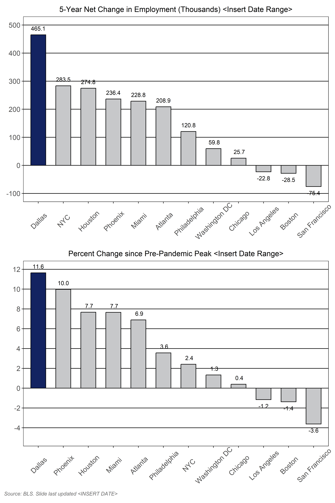
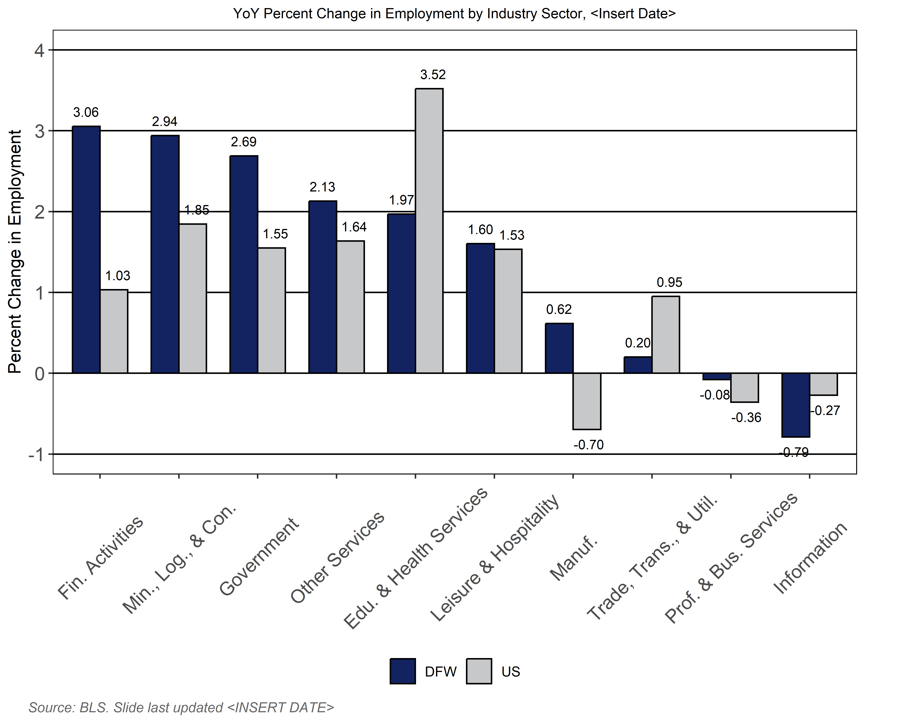
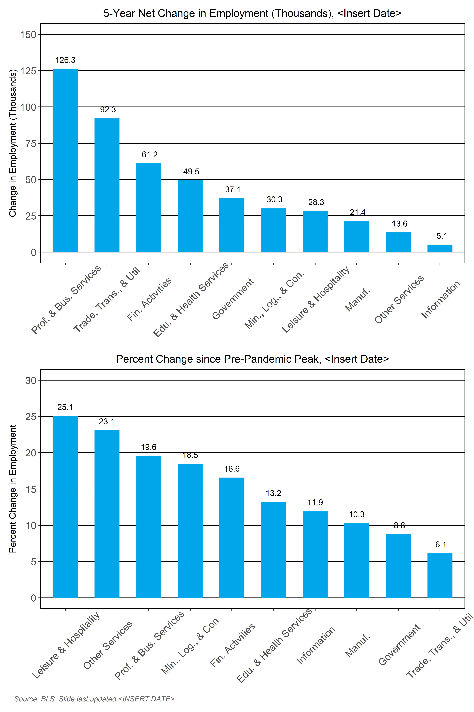
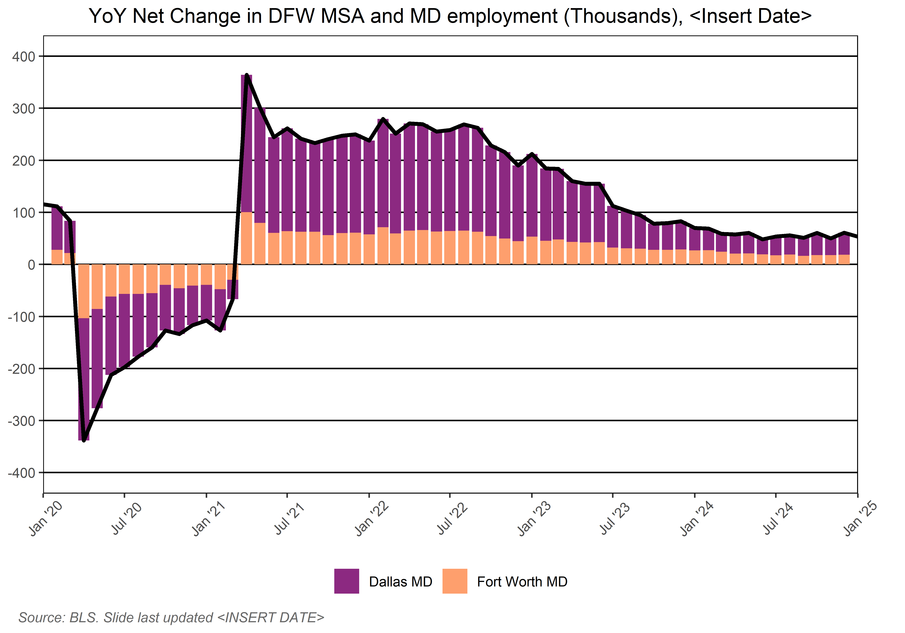
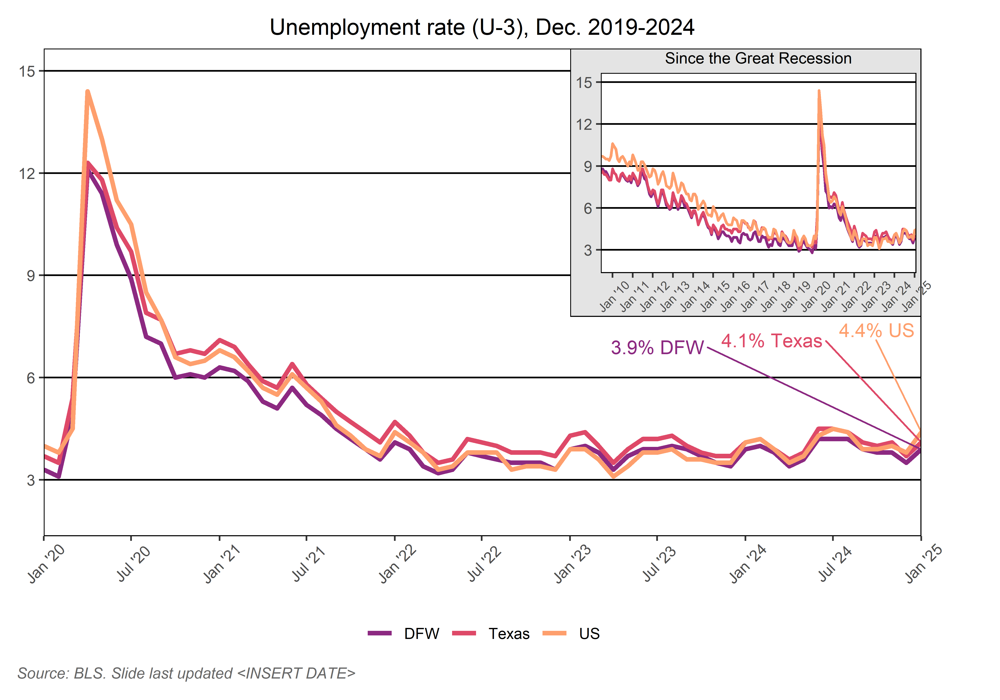
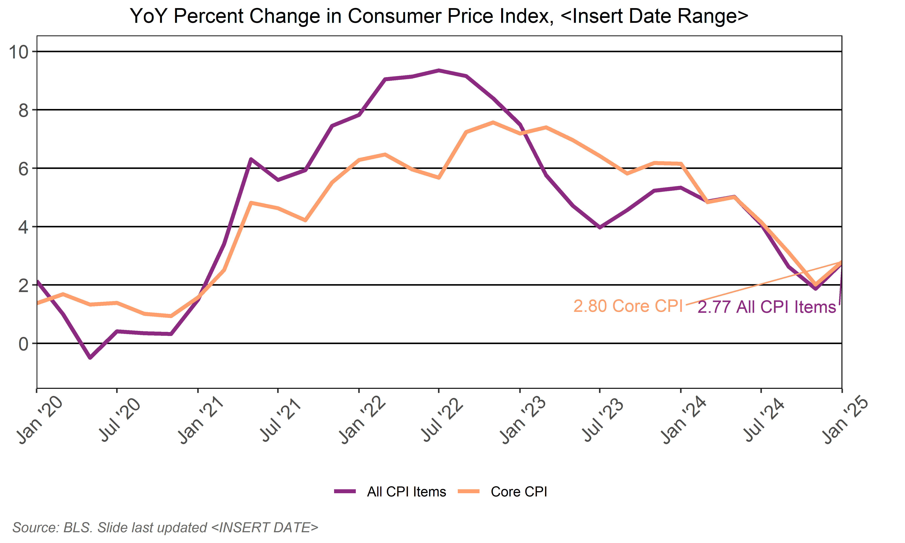
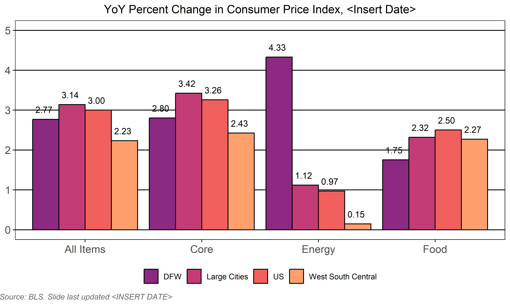

Economy in Brief Markdown
2024-09-10
EMPLOYMENT BY METRO

Description: Year-over-year (YOY) percent and net change in employment for the 12 most populous U.S. metropolitan areas.
Why it’s important: YOY net change in employment can indicate whether an economy is improving or declining, while accounting for the effects of seasonal variability in monthly data. YOY percent change in employment normalizes the size of the employment base across target geographies, allowing for an alternative comparison of performance.
Key Takeaways:
- The NYC metro added the most jobs (132,700) and had the highest rate of employment growth (3.2%) among the largest U.S. metros in Dec. 2023.
- All large metro areas have shown YOY employment gains for the 33rd month in a row. Larger-than-normal YOY gains began appearing in April 2021 due to steep job losses in 2020 but have continued to scale back to normal through the end of 2023.
- The top 12 metros accounted for 32% of the 2.9 million jobs added to the U.S. economy in Dec. 2023.
- The Dallas Region’s pre-pandemic and pandemic job performance is hidden in these employment rebound comparison figures requiring more exploration that follows.
EMPLOYMENT BY METRO 2

Description: Five years of net change in employment for the 12 most populous U.S. metropolitan areas covering pre-pandemic, pandemic, and recovery periods, and percent of pre-pandemic jobs added to date.
Why it’s important: Five years of net change in employment data highlights the economic strength metros exhibited heading into the pandemic, as well as their ability to recover after pandemic job losses. Percent of jobs beyond the pre-pandemic peak indicates how fast a metro has moved beyond recovery.
Key Takeaways:
The Dallas Region is first among large metros in net job gains over the past five years with a total of 593,700, more jobs than the next two large metros – Atlanta and Houston – combined.
The Dallas Region surpassed its pre-pandemic total jobs high mark from Feb. 2020 sooner than all other large metros. Several large metros continue to hover around pre-pandemic job levels.
In Dec. 2023, total employment in the Dallas Region was 4.4 million. Dallas currently has 13.6% more jobs than at peak pre-pandemic employment, 5.2 percentage points higher than the next large metro.
EMPLOYMENT BY INDUSTRY

Description: Year-over-year (YOY) percent change in employment in the Dallas Region by industry sector compared with the U.S.
Why it’s important: Industries were impacted by the pandemic to varying degrees. This is reflected in the magnitude of job losses, recovery, and growth in the Dallas Region by sector compared with national figures.
Key Takeaways:
All Dallas Region industries are showing YOY growth in Dec. 2023. This represents more than two full years of growth across all industries.
Other services and mining, logging & construction led among DFW industries in YOY percent growth for Dec. 2023, though professional & business services gained the most jobs over the past year.
Most DFW industries are growing faster than the national average excepting education & health services and government.
The Dallas Region’s pre-pandemic industrial diversity has helped to reduce the length of recovery as compared to metro areas that are dependent on only a few industries.
EMPLOYMENT INDUSTRY 2

Description: Five years of net change in employment for industry sectors, covering pre-pandemic, pandemic, and recovery periods, and percent of pre-pandemic jobs added to date by sector.
Why it’s important: Five years of net change in employment data highlights the economic strength each sector exhibited heading into the pandemic, as well as the speed of employment recovery. Percent of pre-pandemic jobs added indicates how fast an industry has moved beyond recovery.
Key Takeaways:
All industry sectors in DFW are showing five-year gains in employment and are exceeding pre-pandemic employment levels in Dec. 2023. Professional & business services; trade, transportation & utilities; and financial activities comprise 65% of those gains.
Although leisure and hospitality sector employment increased by 5.8% in Dec. 2023, the industry lost more jobs than all other sectors combined in April 2020, which is reflected in smaller growth beyond pre-pandemic levels compared with other sectors. On the other end of the scale, the professional and business services sector is 25% larger today than pre-pandemic.
Employment By Texas Region
Description: Year-over-year (YOY) net change in employment for the largest Texas metropolitan statistical areas (MSAs).
Why it’s important: The four largest MSAs in Texas account for about three-fourths of employment in the state. Pandemic-related job losses were also concentrated in urban areas, so recovery in these locations largely dictates how well the state has recovered.
Key Takeaways:
In Dec. 2023, large Texas MSAs accounted for 69% of YOY statewide job gains and 72% of total jobs in the state. New jobs outside large MSAs showed continued high numbers in Dec. 2023.
In Dec. 2023, the Dallas MSA exceeded peak pre-pandemic job levels (114%). This rebound is second among large Texas metros behind Austin, although DFW is creating more than four times as many total jobs as Austin over a twelve-month period.
From June 2010 through March 2020, the Dallas MSA created jobs without interruption, while other Texas metros periodically endured the impacts of energy and/or climate-related shocks. Although COVID-19 ended this growth streak, strong economic fundamentals have helped recovery come faster for the Dallas MSA than the rest of nation.
Employment By Metro Division

Description: Year-over-year (YOY) net change in employment for the DFW metropolitan statistical area (MSA) and metro divisions (MD).
Why it’s important: Assessing employment by MD offers a more granular view of where changes are occurring within the MSA. This is particularly important because the industrial mix is different between the Dallas and Fort Worth MDs.
Key Takeaways:
The Dallas MD accounted for 75% (101,000) of the region’s 134,200 job gains in Dec. 2023, compared with 25% (33,200) in the Fort Worth MD.
In Dec. 2023, employment in the Dallas MD is 115% of pre-pandemic totals. Dallas regained pandemic job losses by July 2021. Fort Worth MD job totals are 111% of pre-pandemic levels. Fort Worth regained pandemic job losses by September 2021.
The Dallas MD relies more heavily on the professional and business services, financial activities, and information sectors for employment than Fort Worth. The Fort Worth MD is more dependent on the trade, transportation, and utilities; mining, logging, and construction; and manufacturing sectors for employment than Dallas.
Unemployment

Description: Percentage of the regional, state, and national civilian workforce who are not employed, but desire to have a job (also known as U-3).
Why it’s important: The official unemployment rate (UR) applies to people who want to work but who are not attached to a job. U-3 is one of the most important economic indicators available because it signals the relative efficiency of the labor market and/or health of the economy (or sector). Along with containing inflation, keeping the economy close to full employment drives monetary policy.
Key Takeaways:
In Dec. 2023, the Dallas Region recorded an unemployment rate of 3.3%, holding steady from November. This stands in stark contrast to the pandemic-induced high of 12.1% registered in April 2020. The most recent data indicates that the national UR remained constant in Jan. 2024 at 3.7% while the Texas UR fell by 0.1 percentage point to 4.0% in December.
During the Great Recession, the Dallas Region saw a peak U-3 of 8.7% – 3.4 percentage points lower than the pandemic high. However, the previous recovery took 70 months to fall below 4.0% compared with 19 months during the pandemic recovery.
Inflation

Description: Year-over-year (YOY) percent change in the consumer price index (CPI) for the Dallas Region over the past 5 years.
Why it’s important: CPI is a measure of the changing cost of a basket of goods and services over time. It serves as an indicator of how far household income can stretch. Energy and food costs are generally considered more volatile than other CPI items. Setting them aside produces a measure of “core inflation.” Along with keeping unemployment rates low, containing inflation drives monetary policy.
Key Takeaways:
DFW’s inflation rate for Jan. 2024 was 5.3%, up slightly from 5.2% in the previous reporting period. Food, recreation, transportation, tuition, and shelter costs contributed to this increase while lower energy (especially gasoline) and medical costs help to offset greater increases.
In Jan. 2024, DFW’s core inflation rate was 6.2%, unchanged from the previous reporting period. DFW continues to outpace the national average of 3.9% by 2.3 percentage points. High costs related to shelter in DFW, continues as the driving factor in keeping core inflation elevated.
Inflation 2

Description: Year-over-year (YOY) percent change in the consumer price index (CPI) for the Dallas Region, Texas, large cities (>2.5M population), and the U.S. city average.
Why it’s important: CPI is a measure of the changing cost of a basket of goods and services over time. It serves as an indicator of how far household income can stretch. Energy and food costs are generally considered more volatile than other CPI items. Setting them aside produces a measure of “core inflation.” Along with keeping unemployment rates low, containing inflation drives monetary policy.
Key Takeaways:
In Jan. 2024, DFW experienced higher than average inflation rates for all CPI items, as well as for core items. Overall inflation in DFW is 5.3% over the previous year (up from 5.2% in Nov. 2023) and core inflation is 6.2% (unchanged from the previous period), primarily due to the cost of shelter.
At -1.7% in Jan. 2024, energy inflation in the DFW is higher than the U.S. average, though prices remain cheaper than twelve months ago. At 4.4%, food price inflation in DFW is higher than the rest of the country largely due to food away from home (e.g. restaurants), although the rate of increase has fallen 0.7 percentage points since the previous period.
Consumer Spending

Description: Consumer spending data gathered from credit and debit card purchases indexed against pre-pandemic spending behaviors.
Why it’s important: Consumer spending is widely viewed as an indicator of public confidence and the health of the economy as it represents 70% of gross domestic product.
Key Takeaways:
As of Dec. 31, 2023, consumer spending exceeded pre-pandemic levels in Dallas (4%), Fort Worth (+13%), and the U.S. (12%).
2023 spending levels in DFW were consistently above normal pre-pandemic consumer behavior. Spending in Dallas fluctuated between +6% to +20% above normal patterns. Increased spending in Fort Worth was generally higher than in Dallas, ranging between +7% to +26% higher than pre-pandemic behavior.
While the pace of inflation slowed in DFW throughout 2023, it remained higher than the national average. In Nov. 2023, DFW inflation once again turned upward even as the Fed considers reducing its benchmark lending rate in 2024.
Consumer Spending 2

Description: Consumer spending data gathered from credit and debit card purchases by select industry segments.
Why it’s important: Pandemic-related impacts on consumer purchases vary widely by segment. Shifts in consumer spending among segments can signal behavior changes and supply chain impacts that inform fiscal, monetary, and public policy responses.
Key Takeaways:
Consumer spending in DFW flattened and even declined in some segments in 2023.
Restaurant and hotel spending in the Dallas Region began returning to normal in conjunction with vaccine distribution in March 2021. Spending remained high in Fort Worth in this segment throughout 2023 but began a downward trend in Dallas.
Retail and transportation spending followed diverging pathways during the pandemic/ recovery periods. The retail segment has driven an overall increase in consumer spending, but inflationary pressure began to impact this behavior at the end of 2022 which continued to decline throughout 2023. Transportation spending only reached pre-pandemic levels in early 2022 and remained volatile throughout 2023 falling well below normal as of Dec. 31, 2023.
Fortune 500 Companies

Description: Largest public companies in the United States, ranked by 2022 revenues and headquarter (HQ) locations.
Why it’s important: Attracting and retaining the HQs of the biggest companies in the U.S can serve as a proxy indicator for the ease of doing business or superior quality of life in a region. Tangible benefits associated with HQ locations include high paying jobs, contributions to GDP, and attraction of goods and services providers within the Fortune 500 company’s supply chain.
Key Takeaways:
The Dallas Region is home to 2 of the top 10 Fortune 500 companies. New York, Los Angeles, and Chicago have none.
The Dallas Region’s 24 Fortune 500 companies represent the 4th largest concentration in the U.S.
Revenues generated by Dallas Region Fortune 500 companies totaled more than $1.35T in 2022, the second highest total among metros behind New York.
Most recently, Caterpillar announced a relocation to Irving in 2022. Jacobs Engineering reorganized and became a subsidiary of Jacobs Solutions holding company.
Population Change 1

Description: Annual estimates of population change from natural causes (births minus deaths) and net migration (both domestic and international) for the Dallas Region.
Why it’s important: Population change broadly describes the health of a metropolitan economy. Changes in each component hint at different conditions. For instance, declining natural increases can indicate an aging population. Net negative migration can indicate impending talent deficits.
Key Takeaways:
The Dallas Region has been on a run of population growth for several decades topping more than one million new residents every 10 years since 1980.
In 2022, DFW added an annual record-topping 170,000 new residents representing 36% of population growth for the entire state of Texas.
On average, population in the Dallas Region increased by nearly 467 people per day in 2022.
By 2050, population projections indicate that the DFW will be larger than Chicago to become the 3rd largest metropolitan area in the U.S.
Population Change 2

Description: Comparative estimates of total metropolitan population, and net and percent population change among the largest U.S. metros.
Why it’s important: Population growth and rates of growth offer different insights into overall population change, especially considering the initial size of population.
Key Takeaways:
Among the largest U.S. metros, the Dallas Region has led in annual estimated population growth, rate of growth, or both throughout the past decade. In 2022, DFW added an annual record 170,000 people, more than any other metro. This represents nearly 50,000 more people than 2nd place Houston.
The Dallas Region grew by 2.2% in 2022, 0.5 percentage points more than the next highest growth rate among the largest metros (Houston at 1.7%). Two-fifths of the 50 biggest metro areas lost population or saw no growth.
The three metros larger than DFW saw declining populations: New York shrank in population by 157,000; Los Angeles lost 101,000 people; and Chicago lost 78,000 people.
Business Activity Impacts

Description: Statistical model of employment and real gross product outlook for metropolitan divisions in the Dallas Region.
Why it’s important: The Perryman Group offers a scenario for projected recovery from the pandemic-induced downturn on two key indicators of economic health and the local distribution of those impacts by metropolitan division (MD).
Key Takeaways:
In 2020, during the height of the pandemic, Perryman concluded that, unlike prior to the Great Depression, the structural foundation of the Texas economy was sound, and “the overall size and scope of activity should return to essentially its prior path.”
This analysis proved to be accurate. Dallas-Fort Worth reached pre-pandemic job totals from February 2020 faster than all other large U.S. metros. Through 2028, the Dallas MD is expected to produce 387,000 new jobs, while the Fort Worth MD will contribute an additional 139,000 jobs.
Regional gross product is expected to expand by 3.7% in the Dallas MD and by 3.3% in the Fort Worth MD.
While Fort Worth is expected to keep pace with overall state economic growth, Dallas is poised to exceed U.S. and state growth.